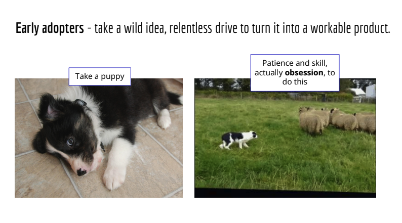
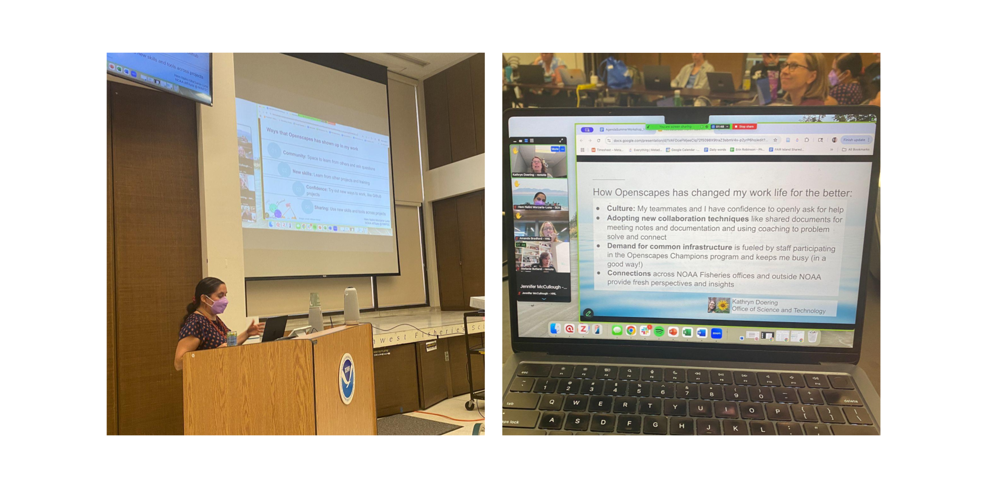
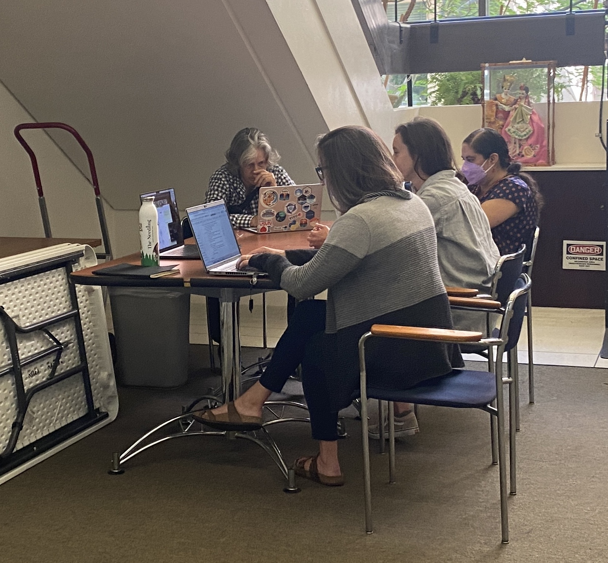
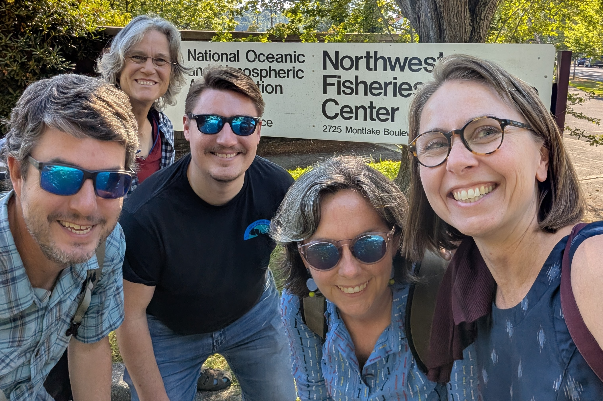

Building a Culture of Reproducible Science: Reflections from the 2025 NOAA Fisheries Openscapes Summer Workshop
Erin Robinson ![]()
Eli Holmes
Jon Peake
the Openscapes Team
and the NMFS Openscapes Mentors
Cross-posted at openscapes.org/blog, nmfs-openscapes.github.io/blog
On July 21, 2025, NOAA Fisheries (aka National Marine Fisheries Service, NMFS) staff and collaborators came together for the NMFS Openscapes Summer Workshop—a hybrid retreat designed to reflect on progress, share lessons, co-create, and deepen our collective commitment to open, reproducible science.
The day was intentionally structured to support collaboration across time zones, with morning sessions aligned to the East Coast and afternoon sessions focused on the West Coast, including Alaska and Hawai‘i. Each co-creation block began with a “wise standup” to establish the project and crowdsource knowledge in the room, followed by blocks of coworking time. A full-group plenary brought everyone together mid-day, where NMFS Openscapes participants shared how their work practices and workflows had evolved, providing an opportunity to learn from each other.
This year’s workshop marked a critical juncture. As NOAA Fisheries advances its shift to cloud infrastructure, participants are engaging with what that truly requires—not just uploading data, but rethinking how scientific work is documented, organized, and shared. What emerged was clear: mentorship and collaboration are a form of infrastructure, one that enables long-term transformation and upholds our scientific integrity values.
Crossing the Chasm: The Journey Toward Reproducibility
A recurring theme throughout the day was the ongoing transition from legacy, siloed workflows to open, reproducible, and cloud-compatible practices. These innovations, while forward-moving, are at times disruptive. The plenary provided a time for reflecting on and sharing lessons learned from across NOAA Fisheries about these transitions.
During the first half of the plenary session, Eli Holmes, Lead of NOAA Fisheries Open Science, provided a set of concepts on organizational change: diffusion of innovation and the adaptation of that work by Geoffrey Moore, crossing the chasm. Eli viewed these ideas as a set of tools, alongside GitHub or other software tools, that help her understand and explain her own work. She demonstrated this approach by reflecting on the evolution from her own decision to learn to use GitHub to its adoption across NMFS today.
As Eli and a few initial colleagues incorporated GitHub into their own workflows for sharing models, they began to envision broad use across NMFS. Eli likened this early GitHub work to the first person who thought a wolf could be trained to herd sheep—a wild, disruptive idea at first, met with skepticism from those focused on raising sheep, not training puppies.

Most people in an organization would not consider themselves eager to train a puppy or dramatically change their workflows. This is the chasm between early adopters and everyone else. Eli emphasized that for an idea to diffuse into the larger organization, early adopters must be aware that there is a chasm. Being aware of the chasm and that it is a normal part of these kinds of change can reduce frustration in the early adopters, who often wonder why others aren’t as eager to make a change as they are.
Being aware is not enough. Crossing the chasm requires the initial ideas to be shaped into something that solves a real problem for the community and is practical and easy to adopt. Continuing with the sheepdog metaphor, early adopters put in the patience and obsession to turn that “puppy” into a skilled sheepdog. Looking back, Eli highlighted how those early meetings and experiments with a small group of early adopters, and slow progress over time, were the essential work required to cross the chasm and support and move from eager adopters to those more hesitant to change.
Ultimately, NMFS successfully crossed the GitHub adoption chasm. The NMFS’s early GitHub experiments evolved into GitHub Enterprise licences that are available equitably across centers, processes are documented, and a GitHub Governance team is established at NOAA Fisheries. This retrospective anecdote provided encouragement to those among us who are innovators and early adopters. We hope that some might take these concepts and ‘fork them’ to understand, troubleshoot, and communicate other technology transitions.
In the second half of the plenary, mentors used the Moments, Memories, Meaning approach to eliciting stories, to highlight progress through NMFS Openscapes. One mentor shared experiences of the lag between having the tools available and gaining traction with their team to use them. Another mentor described how automating stock assessment reports, one section at a time, over multiple years, eventually freed up time to focus not just on delivering outputs, but improving the workflow behind them. A third mentor knew they had reached a tipping point when it was easier to do things the new way, in Quarto, than the old PowerPoint way.

Without documentation, automation, and shared protocols, scientific work remains stuck in desktop-bound silos. But with them, it becomes portable, scalable, and future-ready. The lesson from these stories is clear: transformation takes time. But each script shared, repo forked, and quarto book published is a step toward workflows that don’t just work locally—they work across teams, in the cloud, and for the long haul.
Project Progress During Co-Creation Blocks
During the morning and afternoon co-creation blocks, participants worked on active projects with the support of Openscapes mentors and peers. These sessions were a twist on the agile format stand-ups. Participants shared their problems quickly, the entire audience asked clarifying questions, and then a small group had a short breakout on each problem to identify more resources, advice, or questions. With this quickly crowdsourced information, the teams interested in working on each project then split off for dedicated time to make tangible progress.

Below is a list of projects that were worked on during the workshop:
1. Centralizing NMFS Branding Assets
Participants worked on centralizing NMFS branding assets for use across scientific outputs. This included referencing theNOAA-NMFS-Brand-Resources GitHub repository, which houses reproducible elements like colors, fonts, and layout guidance. The goal is to support consistency across reports, websites, and Quarto projects.
2. Decision Tree for Moving On-Prem Data to the Cloud
This group focused on outlining when and how to move datasets from on-premise storage to the cloud. The resulting decision tree is being developed as part of the NMFS Cloud Data Resource Book. This project was identified as foundational to cloud readiness.
3. Research Compendium for PIFSC Marine Turtle Camps and Beyond
This team focused on adapting a research compendium template to the needs of marine turtle fieldwork and other data-collection-intensive projects. Their work builds on existing compendium structures to enable reuse and reproducibility across related efforts.
4. Applying Quarto for Automating and Templating Reports
This project explored how Quarto can be used to generate repeatable report templates. The group investigated how to streamline authoring scientific reports across Centers by using parameterized templates and integrating them into version-controlled workflows. An example workflow was tested during the co-creation time. This work builds on the already advanced-level Quarto applications developed by the mentors and their colleagues.
5. Open Science Tools Decision Tree
This group worked on developing guidance around which tools to use (e.g., GitHub, Quarto, RStudio) for different stages of scientific work. Their goal was to make open science workflows easier to adopt, particularly for those new to coding or version control.
6. Central Locations for Open Science Tools at PIFSC
This team focused on designing a more discoverable and centralized place to access open science resources within PIFSC. Their intent was to “fork” the model used by other groups to curate tools and templates for broader visibility and reuse across the center.
7. “Code Cleanup” of R packages in the National Stock Assessment Program
The group who maintains or contributes to the centralized asar and stockplotr R packages for automated stock assessment reports used the time for a collaborative code cleanup.
What Comes Next: Enabling NOAA’s Cloud Transition
Moving into the next year of work, cloud migration is a central thread to carry forward. Participants emphasized that being “cloud ready” requires more than storage space—it depends on well-documented, reproducible workflows that enable others to understand, reuse, and trust the work. Through the co-creation blocks, they identified actionable gaps in training and decision-making, underscoring the need to invest in collaboration-centered approaches to technical change.
Key needs emerged as NOAA Fisheries looks ahead:
Build pathways, not just tools, especially for complex workflows involving cloud storage and access
Tailor documentation and training to NOAA scientists, with their real-world collaboration and compliance needs in mind
Broaden the mentor community to include data stewards, analysts, managers, and IT staff
Amplify successful projects and template solutions across centers
Acknowledge and support the “invisible work” of documentation, onboarding, and peer coaching
From the many moments shared over the course of the day, a real shift occurs when reproducible workflows are not just better—they’re the obvious choice. The workshop highlighted how NMFS Openscapes is enabling NOAA Fisheries to lead by example—putting core scientific values into practice through open workflows, shared learning, and intentional collaboration.

Citation
@online{robinson2025,
author = {Robinson, Erin and Holmes, Eli and Peake, Jon and Openscapes
Team, the and the NMFS Openscapes Mentors, and},
title = {Building a {Culture} of {Reproducible} {Science:}
{Reflections} from the 2025 {NOAA} {Fisheries} {Openscapes} {Summer}
{Workshop}},
date = {2025-08-19},
url = {https://nmfs-openscapes.github.io/blog/2025-08-19-nmfs-mentors-workshop/},
langid = {en}
}